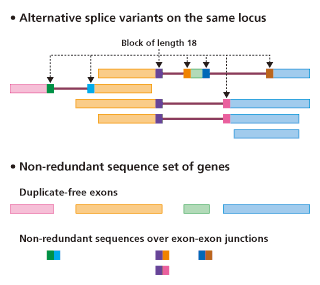

Specificity check using non-redundant database of mRNA sequences
Several studies show that single base mismatch between the siRNA guide strand and the target mRNA is permissible to induce target mRNA cleavage (Du et al., 2005; Birmingham et al., 2006). Therefore, it is desirable to select siRNA that contain more mismatches as possible to all non-targeted mRNAs. Our previous analyses indicate that about 10% of the siRNAs have at least three mismatches to any other untargeted transcripts, although there are very few (<1%) siRNAs with four mismatches or more (Naito et al., 2004). Accordingly, siDirect avoids off-target hits with less than three mismatches by exhaustively searching the non-redundant database of mRNA sequences.
Overview of non-redundant database of mRNA sequences
See the referece (Naito et al., 2004) for detail.

References
- Du Q, Thonberg H, Wang J, Wahlestedt C, Liang Z. (2005)
A systematic analysis of the silencing effects of an active siRNA at all single-nucleotide mismatched target sites.
Nucleic Acids Res. 33, 1671-1677.
[Link]
- Birmingham A, Anderson EM, Reynolds A, Ilsley-Tyree D, Leake D, Fedorov Y, Baskerville S, Maksimova E, Robinson K, Karpilow J, Marshall WS, Khvorova A. (2006)
3′ UTR seed matches, but not overall identity, are associated with RNAi off-targets.
Nat. Methods 3, 199-204.
[Link]
- Naito Y, Yamada T, Ui-Tei K, Morishita S, Saigo K. (2004)
siDirect: highly effective, target-specific siRNA design software for mammalian RNA interference.
Nucleic Acids Res., 32, W124-W129.
[Link]